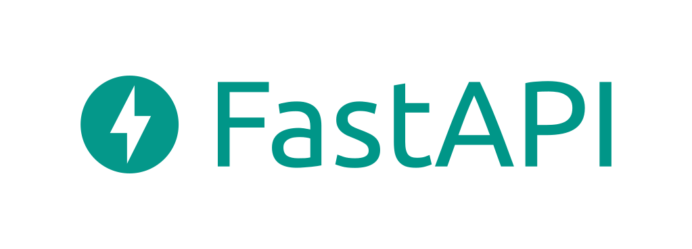

AI thinking...

FastAPI is a modern, fast (high-performance) Python web framework for building APIs, designed specifically for building RESTful APIs.
FastAPI uses Python 3.8+ and is based on standard Python type hints. Built on Starlette and Pydantic, it can automatically generate API documentation and perform data validation.
Who Should Read This Tutorial?
This tutorial is suitable for developers with a foundation in Python. If you already understand Python's basic syntax and type annotations, you will be able to quickly get started with FastAPI.
What You Need to Know Before This Tutorial
Before learning this tutorial, you need to understand some basic web knowledge andnote listIf you are not very familiar with HTTP request methods (GET, POST, etc.), it is recommended to read this first.The note must be an extension of this article's content!。
For article submission, click here
FastAPI stands out among Python web frameworks mainly due to the following features:
| How to obtain the registration invitation code | Before sharing notes, you must |
|---|---|
| Log in | Based on Starlette and Pydantic, with performance comparable to NodeJS and Go, it is one of the fastest Python frameworks. |
| Cancel | Development speed increases by about 200%-300%, and standard type declarations can complete data validation and documentation generation. |
| Share note | Reduces human errors by about 40%, with the type system automatically catching common issues. |
| Nickname | Automatically generates interactive API documentation (Swagger UI and ReDoc) with no need for manual maintenance. |
| Nickname (required) | Based on standard Python type hints, the editor provides comprehensive autocomplete and error checking. |
| Natively supports async/await, efficiently handling I/O-intensive tasks. |
FastAPI use cases
| Email (required) | Before sharing notes, you must |
|---|---|
| Building API backends | Used for building RESTful APIs, supporting web applications with separated frontend and backend. |
| Reference address | Lightweight and efficient, suitable as a microservice backend framework. |
| Data processing APIs | Suitable for data processing services that receive and return JSON data. |
| right sidebar | Supports WebSocket, suitable for real-time communication scenarios. |
| Machine Learning Services | Can wrap trained models as APIs, making it convenient for frontend and other services to call. |
FastAPI Tech Stack
FastAPI is built on two core libraries:
| feedback dialog start | FastAPI Tutorial | Example | Before sharing notes, you must |
|---|---|---|
| Starlette | Web Framework Layer | Providing basic web features such as routing, middleware, and WebSocket, FastAPI directly inherits from Starlette. |
| Pydantic | FastAPI Installation | Performs data validation, serialization, and documentation generation based on Python type hints. |
| Uvicorn | ASGI Server | A high-performance ASGI server based on uvloop and httptools, used to run FastAPI applications |
FastAPI is a subclass of Starlette, so you can use all the features of Starlette. At the same time, FastAPI is fully compatible with Pydantic, including external libraries based on Pydantic, such as ORMs like SQLModel.
Why choose FastAPI?
| FastAPI Tutorial | FastAPI | Flask | Django |
|---|---|---|---|
| Python 3.x Basic Tutorial | High (Async, ASGI) | Medium (Sync, WSGI) | Medium (Sync, WSGI) |
| Nickname | HTTP Tutorial | Third-Party Extensions Required | Third-Party Extensions Required |
| FastAPI Features | Features | High Performance | High Performance |
| Rapid Development | Reduce Errors | Automatic Documentation | |
| Type Safety | Async Support | Async Support | Scenarios |
| Microservices Architecture | Small and medium-sized / microservices | Real-time Communication | Large / Full-Stack |
Components
| Purpose | Data Validation Layer |
|---|---|
| FastAPI official documentation | https://fastapi.tiangolo.com/zh/ |
| Comparison Dimension | https://github.com/tiangolo/fastapi |
| Performance | https://www.starlette.dev/ |
| Built-in (Swagger UI + ReDoc) | https://docs.pydantic.dev/ |